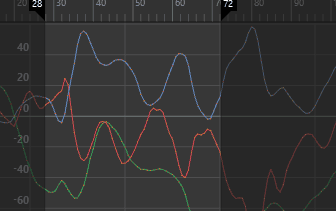

- 在“曲线图编辑器”(Graph Editor)的“曲线”(Curves)菜单中，选择“重新对曲线采样”(Resample Curve) >

注： 若要还原过滤器默认设置，请单击“过滤器”(Filter)窗口中的。
- 时间范围(Time Range)
-
指定关键帧重采样的时间范围。

- 全部(All)
-
对整个时间范围的曲线重采样。
- 开始/结束(Start/End)
-
指定的时间范围（开始时间/结束时间）内的所有关键帧均会重采样。
- 时间滑块(Time Slider)
-
对“时间滑块”(Time Slider)的“播放开始时间”(Playback Start Time)和“播放结束时间”(Playback End Time)定义的时间范围内的曲线重采样。

- 开始时间(Start Time)
-
指定时间范围的开始。仅当启用“开始/结束”(Start/End)时，该选项才可用。
- 结束时间(End Time)
-
指定时间范围的结束。仅当启用“开始/结束”(Start/End)时，该选项才可用。
- 重采样类型
-
指定重采样过滤器，它是定义曲线中的关键帧如何重采样的算法。请选择下列选项之一：
- 最近的采样(Closest Sample)
-
使用距最近时间步最近的采样值。
- 线性插值
-
使用距最近时间步最近的两个采样之间的线性插值。
- 长方体过滤器
-
使用相等的权重计算过滤区域中所有采样的总和。
- 三角形过滤器
-
使用影响关键帧的线性曲线，以便采样区域的边中发生最少的过滤。
- 高斯 2(Gaussian 2)
-
使用在峰值顶部逐渐将采样加权、并朝向采样区域的边的渐变曲线。这是默认设置。
- 高斯 4(Gaussian 4)
-
与“高斯 2”(Gaussian 2)过滤器十分类似，但其根部更窄。
- 时间步(Time Step)
-
设定重采样的周期。如果将“时间步”(Time Step)设置为 4，则每四帧放置一个关键帧。当“时间步”(Time Step)周期大于曲线上关键帧的频率时，重采样的效果最佳。